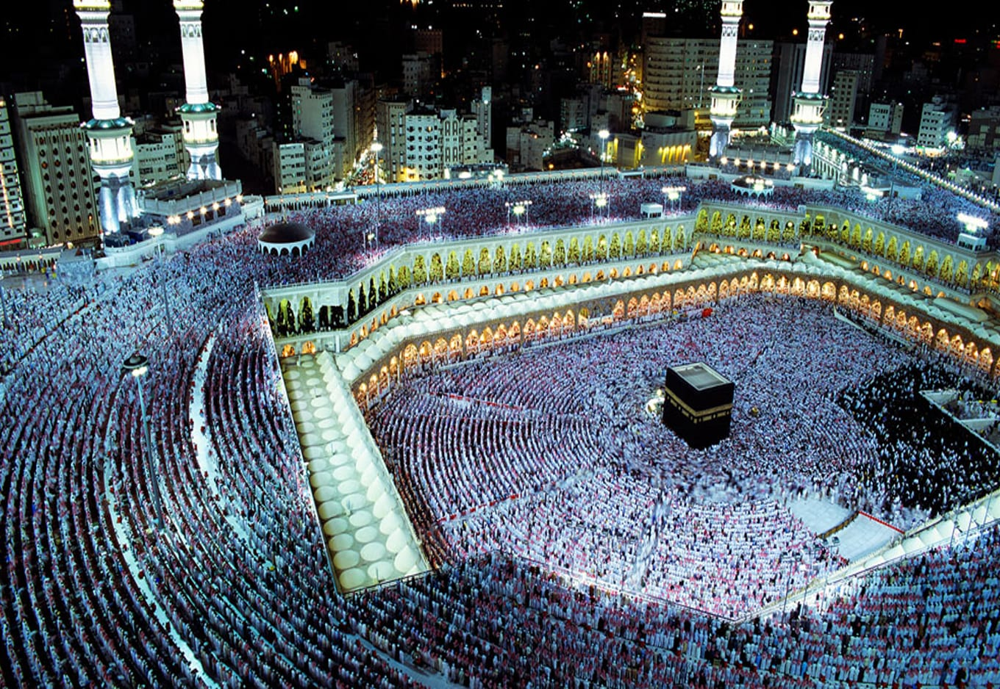

| الرئيسيه | الشهاده | الصلاه | الزكاه | الصوم | الحج |
الحج في الإسلام هو حج المسلمين إلى مدينة مكة في موسم محدد من كل عام، وله شعائر معينة تسمى مناسك الحج، وهو واجب لمرة واحدة في العمر لكل بالغ قادر من المسلمين.[1] وهو الركن الخامس من أركان الإسلام،[2] لقول النبي محمد Mohamed peace be upon him.svg: «بني الإسلام على خمس: شهادة أن لا إله إلا الله وأن محمداً رسول الله، وإقامة الصلاة، وإيتاء الزكاة، وصوم رمضان، وحج البيت من استطاع إليه سبيلا»،[3] والحج فرض عين على كل مسلم بالغ قادر لما ذكر في القرآن: Ra bracket.png وَأَذِّنْ فِي النَّاسِ بِالْحَجِّ يَأْتُوكَ رِجَالًا وَعَلَى كُلِّ ضَامِرٍ يَأْتِينَ مِنْ كُلِّ فَجٍّ عَمِيقٍ Aya-27.png La bracket.png،[4] تبدأ مناسك الحج في الثامن من شهر ذي الحجة بأن يقوم الحاج بالإحرام[5] من مواقيت الحج المحددة، ثم التوجه إلى مكة ليقوم بطواف القدوم، ثم التوجه إلى منى لقضاء يوم التروية ثم التوجه إلى عرفة لقضاء يوم عرفة، بعد ذلك يرمي الحاج الجمرات في جمرة العقبة الكبرى، ويعود الحاج إلى مكة ليقوم بـ طواف الإفاضة، ثم يعود إلى منى لقضاء أيام التشريق،[6] ويعود الحاج مرة أخرى إلى مكة ليقوم بطواف الوداع ومغادرة الأماكن المقدسة.
